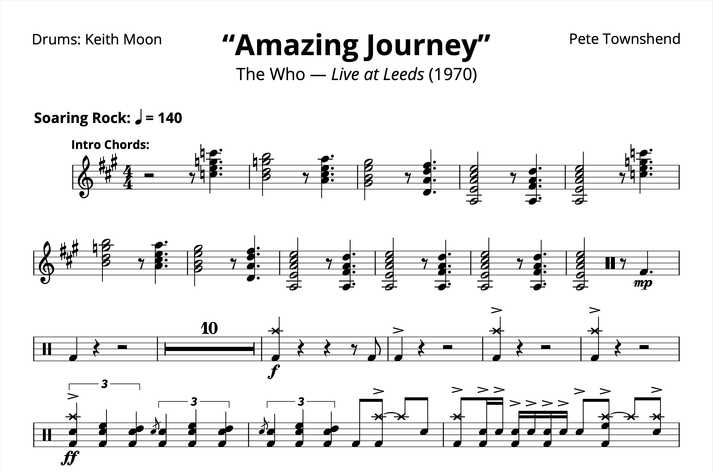

Tagged: Keith Moon
Transcription: “Amazing Journey” — Keith Moon with The Who
Posted on September 3, 2021
Ever since I wrote about Charlie Watts and Get Yer Ya–Ya’s Out! last week, I’ve been on a bit of a classic rock kick, especially with live albums. And so this week, I’m finally going to talk about Live at Leeds.
It’s hard to fully explain the impact this album has had on me as a drummer. Keith’s playing on this record is just out of this world. Keith is often regarded as a zany, fly–by–the–seat–of–his pants kind of player. But the closer attention I’ve paid to his drumming, the more I’ve appreciated his nuances, as well as how he navigated the arrangements with the rest of the band. Read More . . .
Transcription: “Behind Blue Eyes” — Keith Moon with The Who
Posted on August 30, 2020

It’s finally time for some Keith Moon, the man who got me into drumming. I think Live at Leeds is one of the most important albums for any drummer to listen to, myself especially. I expect that one of these days I’ll take a look at the record; I’m even tempted to do a full note-for-note transcription of it…
But today I have “Behind Blue Eyes”, off of Who’s Next. Read More . . .